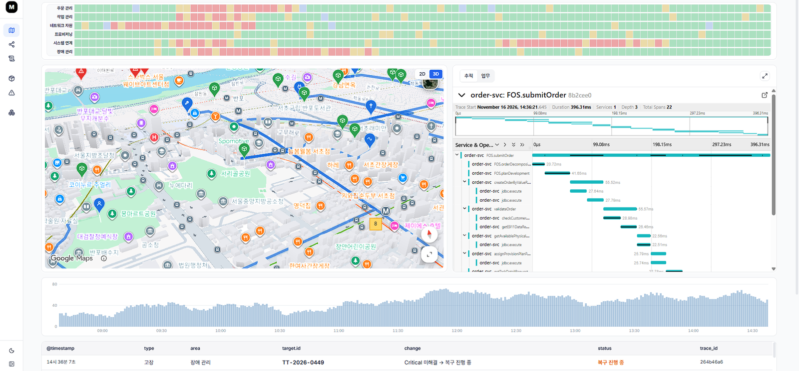

1. Managing All Three Together
Operations ultimately comes down to never losing sight of three things: what the current situation is (context), what has changed (change), and what the state is right now (state). Rather than measuring them separately, JuneAI binds the three into one and tracks them continuously.
Context
Maintains the context in which objects connect to one another.
Change
Records what changed, when, and how.
State
Manages the current state of each object.
On that foundation, it monitors the events and relationships among diverse objects, and simulates impact and change before anything is touched.
2. Managed Through Spans and Workflows
Data is retained, not let slip away. JuneAI stores key data separately as span attributes and continuously monitors unexpected changes and state changes.
- Span attributes — Attaching important values to spans leaves evidence that can be traced back later.
- Always-on monitoring — Unexpected changes and state changes are never missed.
- Workflows — Workflows are more useful for state management, and workflows are better suited to an event-driven model.
3. Adding to Legacy Without Changing It
Legacy systems do not provide the capabilities above. But with JuneAI, you add those capabilities to legacy without changing it.
- Improves the user experience while enhancing existing legacy without changing it.
- Builds the latest technology — AI agents and ontology — on a legacy foundation.
- Increases system stability and reliably reinforces existing core assets.
It adds context, change, and state management without touching the legacy. Because it leaves core assets intact and reinforces on top of them, it is safe.
4. More Precise and Accurate Than Palantir
The Palantir ontology often loses context and misses changes. Propagation frequently breaks at process and service boundaries and context is severed, and Palantir alone struggles to solve this. In particular, Palantir's weaknesses show in environments with heavy legacy, where state mismatches create consistency problems.
| Dimension | Palantir Ontology | JuneAI |
|---|---|---|
| Context | Frequently severed as propagation breaks at boundaries | Maintained across process and service boundaries |
| Change | Can be missed | Always recorded and monitored |
| State | Consistency problems from mismatch | Managed and tracked consistently |
| Legacy | The more legacy, the greater the weakness | Reinforces on top without changing it |
JuneAI manages and tracks context, change, and state far more precisely and accurately than Palantir. It monitors events and relationships accurately, and simulates the scope of impact and the degree of change accurately.
It manages the processing flow and the context, change, and state of calls per request ID.



JuneAI always manages and propagates context, change, and state. Nothing is severed or lost along the way. This enables more accurate root cause analysis and action, and lets users make the optimal decisions.